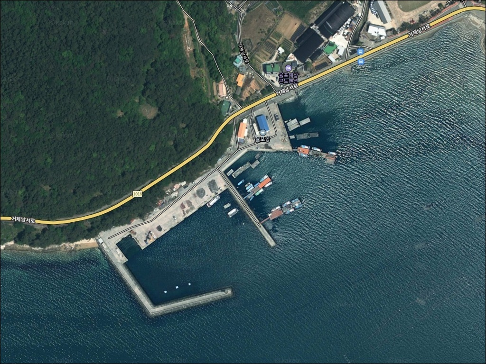
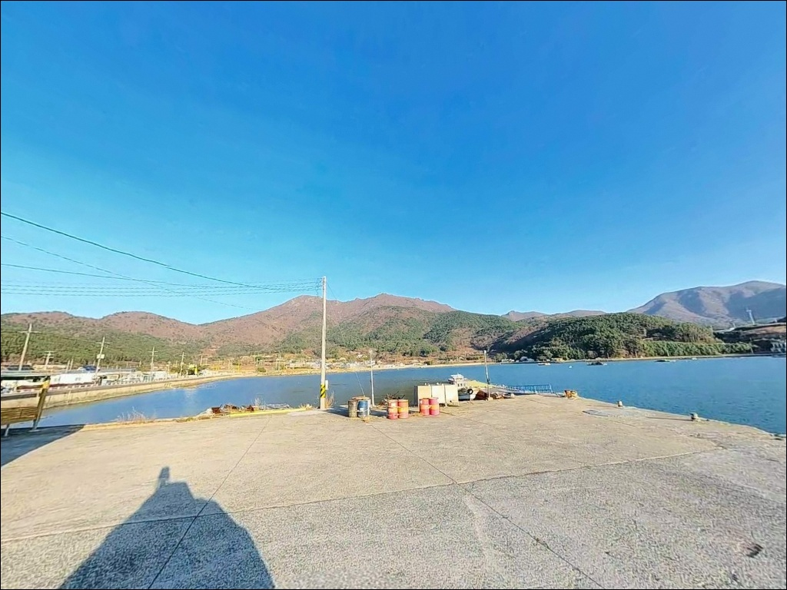
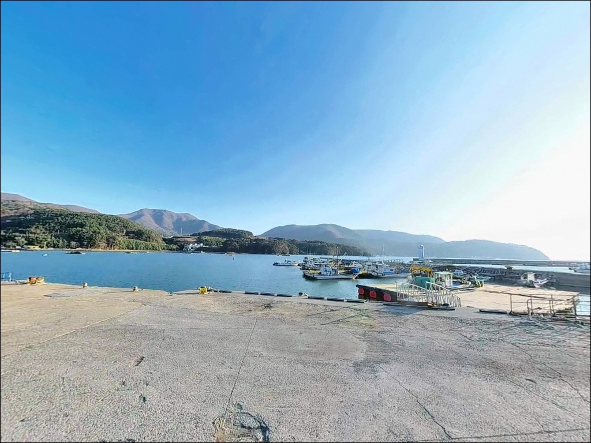
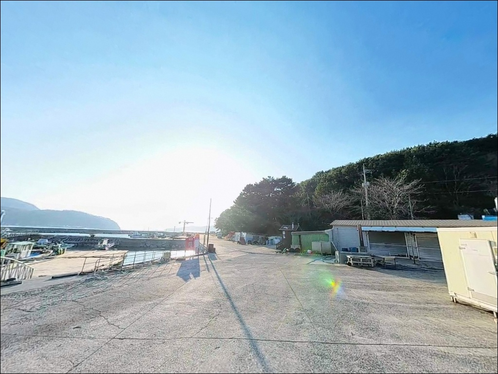
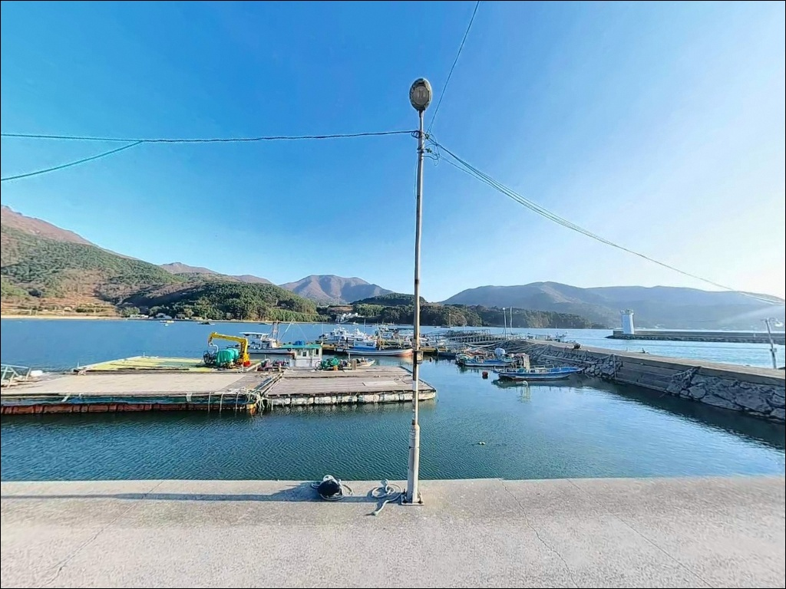
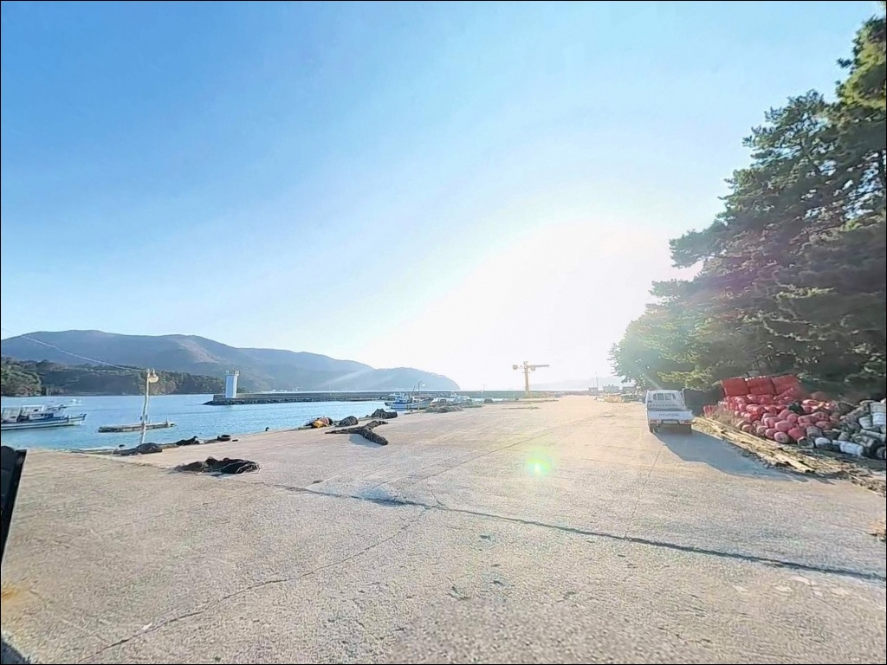
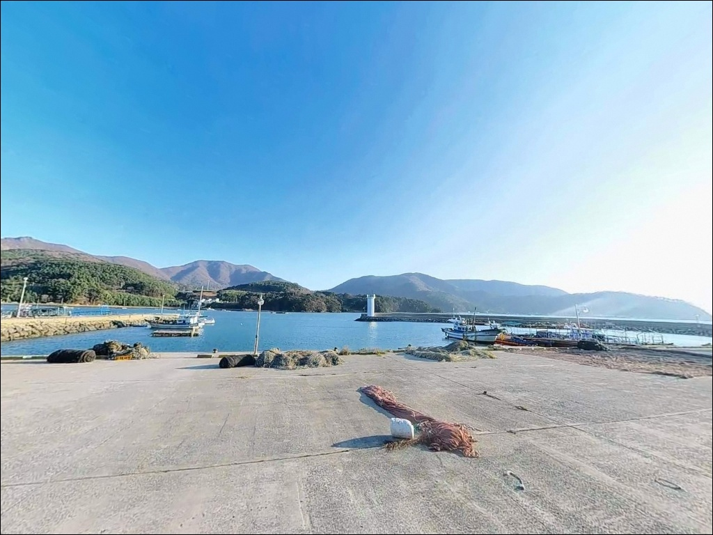
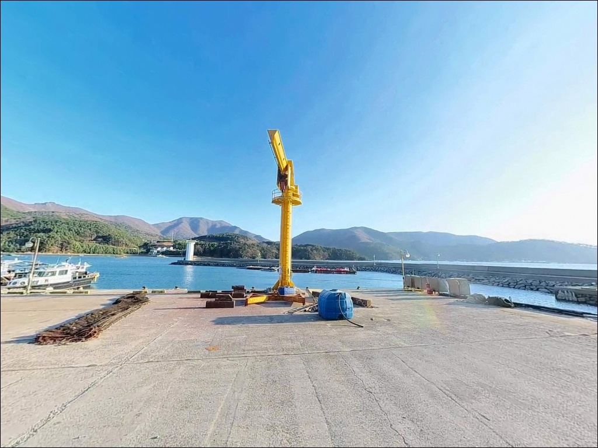
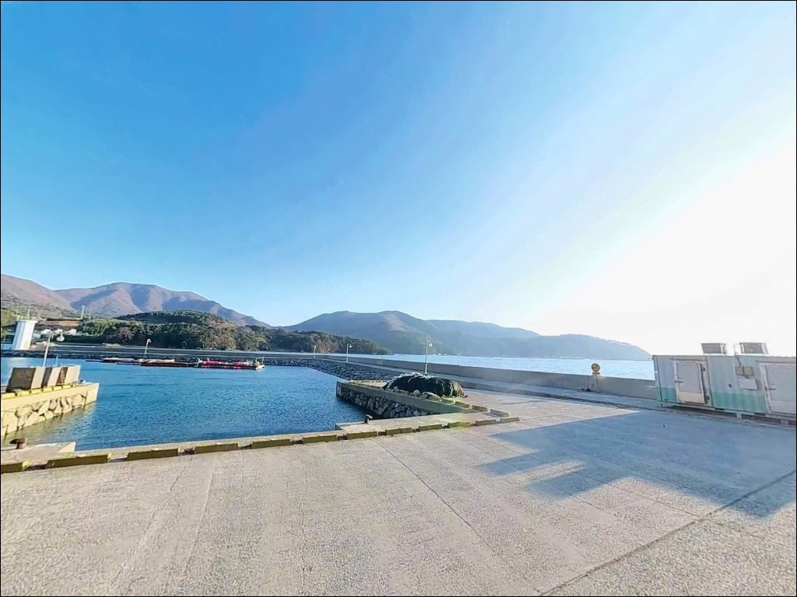

내항 2m 수심과 다른 율포항 방파제 끝단 8m 수심에서 들어온 볼락 입질
이 페이지에는 광고(제휴 링크 포함)가 있으며, 광고 링크를 통해 구매하면 운영자가 판매 수익 또는 수수료를 받을 수 있습니다. 포인트 사진: 카카오맵 스카이뷰·로드뷰. 이 페이지의 지도·사진 이미지는 카카오맵의 실제 서비스 이미지와 다를 수 있습니다.


포인트 안내
율포항
경남 거제시 동부면 율포리 607-23
율포항은 내항과 외항의 수심 차이가
두 배 이상 나는 구조입니다.
방파제 끝단 외항 방향은 6~8m 수심을 유지하지만
내항 정박 구역은 2~4m에 머무릅니다.
이 차이를 모르고 내항에만 채비를 던지면
핵심 공략 구간을 통째로 비워두는
결과가 됩니다.
이 글은 율포항의 지형 구조와
낚시 방식별 자리 선택 기준,
차박 체류 여건과 대안 동선을 정리합니다.
조황 단정이나 특정 어종 보장은
이 글의 범위에 포함되지 않습니다.

1. 진입 동선과 포인트 접근성
율포항은 1018번 지방도에서
율포마을 방면으로 진입하는 구조입니다.
도로는 왕복 2차선 포장도로로 유지되어 있어
일반 차량 기준 진입에 어려움이 없는 편입니다.
다만 거제도 남부권 특성상
해안을 따라 구불구불한 구간이 포함되며,
급커브 지점에서는 속도를 줄여야 합니다.
항 내부에는 넓은 아스팔트 물량장이 조성되어 있어
대형 SUV나 캠핑카도 진입과 회차가
비교적 자유로운 편입니다.
주차는 방파제 시작 지점 앞 물량장에서
30대 이상 수용이 가능한 공간이 확보되어 있으며,
낚시 자리 바로 뒤에 차량을 세우고
곧바로 활동할 수 있는 구조입니다.
어민 작업이 이루어지는 시간대에는
차량 위치를 조정해야 하는 경우가 있습니다.
부두 내 어구 적재 구역과
선박 항로 구간에는
차량을 세우지 않는 것이 기본 매너입니다.

2. 차박 환경과 야간 체류 여건
율포항은 항내 가로등이 밝게 설치되어 있어
야간 시야 확보가 비교적 안정적입니다.
마을과 적당히 거리가 있는 구조여서
차박 프라이버시도 상대적으로 양호한 편입니다.
차량 통행이 적은 야간에는
정숙한 분위기 속에서 낚시와 숙박을
함께 운용하기 좋은 구조입니다.
거제도 남부 외해에 면한 지형 특성상
바람의 영향을 받는 날이 있습니다.
기상청 해상특보를 출조 전 확인하는 것이
불필요한 상황을 막는 기본 절차입니다.
야간 방파제 외항 쪽은
테트라포드 구간이 미끄러운 편이니
방파제 내항 쪽을 주 체류 구간으로 잡는
것이 안전합니다.


3. 주변 편의시설 및 인프라 현황
율포항 물량장 인근에
공중화장실이 위치해 있으며
상시 개방 및 관리 상태가 양호합니다.
마을 내에는 소규모 슈퍼와 카페가 있어
간단한 식수와 간식 보충이 가능합니다.
학동리 방향으로 이동하면
식당을 포함한 상업시설을
이용할 수 있습니다.
식당과 주유소는 거제면 소재지까지
차량으로 약 10분 이동이 필요합니다.
반경 10km 권에는 거제면 마트, 병원, 낚시점이
갖춰져 있어
출발 전 소품을 갖추기에 부족하지 않은 인프라가
주변에 분포합니다.

4. 방문 전 반드시 확인해야 할 준비사항
율포항은 외해에 직접 면한 구조입니다.
사리 전후에는 방파제 끝단 외항 방향에
파도 영향이 강해질 수 있습니다.
바다타임에서 거제 남부 기준 물때를 확인하고
조금 전후 시기를 노려 방문하는 것이
채비 운용을 안정시키는 조건입니다.
방파제 끝단 외항 구간의
수중여와 테트라포드 주변은
밑걸림이 생기는 구간이 있습니다.
여분 채비를 충분히 가져가는 편이 좋고,
야간 방파제 이용 시에는
헤드랜턴과 구명조끼를 반드시 지참해야 합니다.
미끄럼 방지 기능이 있는 신발도
야간 외항 구간에서는 기본 준비물입니다.
율포항은 지방어항으로 관리되는 항입니다.
어선 이동 동선을 가로막는 자리에
캐스팅하지 않는 것이 기본 매너이며,
마을 주민들에게 피해가 가지 않도록
야간 소음을 자제하는 것도
포인트를 장기간 이용하기 위한 조건입니다.

5. 율포항 방파제 끝단에서 조과가 달라지는 이유
율포항은 L자형으로 꺾인 방파제와
넓은 물량장으로 구성된 지방어항입니다.
외항 쪽에는 완만한 석축과 소형 테트라포드가
거치되어 있고,
내항은 수직 벽면 구조입니다.
주변이 산지로 둘러싸여 있어
바람 영향이 인근 외해 포인트보다 적게 받는
지형 조건을 갖추고 있습니다.
방파제 끝단 콧부리 외항 방향은
수심이 6~8m 내외로 깊고,
조류가 흐르는 구간에서
어류의 활동이 살아나는 구조입니다.
바닥은 주로 펄과 모래가 섞인 형태이며
수중여가 드문드문 발달해 있어
어류의 은신 구간이 자연스럽게 형성됩니다.
내항 정박 구역은 수심이 2~4m로 얕고
잔잔한 수면 조건을 유지합니다.
생활낚시나 민장대를 활용한
가족 단위 낚시에는 내항이 적합하고,
씨알과 조과를 더 기대하는 자리라면
방파제 끝단 외항 방향이 핵심입니다.
출조 전 최신 조황은 꼭 검색해 보시기 바랍니다.


6. 율포항 지형에 어울리는 낚시 스타일
야간 볼락 라이트게임은
이 포인트에서 가장 잘 맞는 낚시 방식입니다.
항내 가로등 아래는 볼락이 모이기 좋은 환경이며,
1.5g 내외의 지그헤드에 그럽웜을 달아
벽면과 석축 사이를 천천히 탐색하는 방식이
이 포인트 구조에 잘 맞는 공략법입니다.
무늬오징어 에깅도 노려볼 만한 방식입니다.
거제도 남부 해역은 두족류 포인트로
오래전부터 알려진 해역이며,
방파제 콧부리 외항 방향에서
3.5호 노멀타입을 기본으로 하고
조류가 강한 구간에서는
딥타입으로 교체해 수심층을 맞추는 것이
채비 컨트롤의 기본입니다.
원투낚시는 내항 전역과
방파제 중간 구간에서 운용하기 좋습니다.
펄 바닥 지형을 노려
봄에는 도다리, 여름에는 보리멸,
야간에는 붕장어를 기대해 볼 수 있습니다.
밑걸림이 적어 낚시 입문자나
가족 단위 낚시에도
부담 없이 운용할 수 있는 방식입니다.
겨울철 찌낚시도 이 포인트에서
빠뜨리기 어려운 방식입니다.
학공치 떼가 들어오는 시기에는
마릿수 조과를 기대할 수 있으며,
가을에는 전갱이와 고등어가
민장대와 짧은 채비에도
반응하는 경우가 있습니다.

7. 대안 포인트와 플랜 B 동선
율포항이 여의치 않을 때
가장 먼저 이동할 대안은
쌍근항 방파제(약 1.4km)입니다.
접근이 용이하고 방파제 구조가
찌낚시와 원투낚시 모두에 적합한 편이며,
거제 남부 낚시 포인트 중에서도
접근성 좋은 자리로 꼽히는 곳입니다.
수산마을 방파제(약 5.5km)는
주변에 펜션이 밀집해 있어
편의 여건이 상대적으로 양호합니다.
콧부리 수심이 8m 내외로 깊고
조류가 강하지 않아
가벼운 채비로도 원투낚시를 운용하기 좋으며,
도다리, 양태, 보리멸을 기대해 볼 수 있는 구간입니다.
거제 동부와 남부가 만나는 지점에 있는
구조라항 방파제(약 10km)는
공공 주차장과 정자가 조성되어 있어
이동 부담이 큰 날의
안정적인 대안 포인트로 활용됩니다.
편의시설도 주변에 갖춰져 있어
당일 일정이 길어질 때
베이스로 삼기 좋은 포인트입니다.

자리 선택 기준을 알면
율포항이 다르게 보입니다
야간 볼락 라이트게임이나 에깅을
즐기는 낚시인이라면
율포항의 방파제 구조는 잘 맞습니다.
넓은 물량장과 밝은 가로등 덕분에
차박과 낚시를 동시에 운용하기 편하고,
공중화장실과 마을 슈퍼도
가까운 편이라 기본 체류 여건은
갖춰진 포인트입니다.
반면 방파제 끝단 외항에서
에깅이나 찌낚시를 운용할 계획이라면
기상 조건을 먼저 보는 것이 필요합니다.
외해에 직접 면한 구조이므로
사리 전후 풍랑 특보가 내려오면
방파제 끝단 진입이 어려워집니다.
기상 확인, 물때 확인, 진입 동선 확인
세 가지를 갖추고 가면
율포항은 거제 남부 방파제 낚시 중에서
효율 좋은 포인트입니다.
거제 남부 외해를 바라보며
물량장에 차를 세우고 하룻밤 머무는 차박 여행자라면,
야간 볼락 라이트게임 한 세션을 곁들이는 출조가
이 포인트의 분위기를 제대로 즐기는 방식입니다.